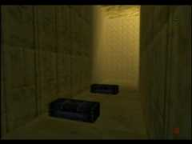
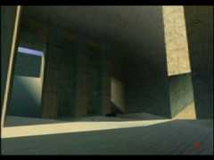
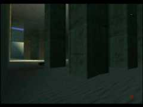
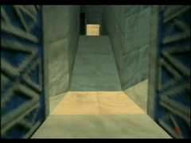
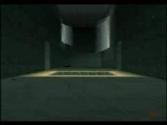
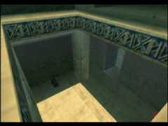

|
| Perfect
Dark : Temple |
| Revoilà
donc le désormais Célèbre Temple de Goldeneye 007 ! Certainement
un des meilleurs Niveaux du jeu cité ci-dessus, et un pas mal pour
Perfect Dark, sans aucun doute. Le Temple
a subi un petit lifting qui le rend maintenant plus réaliste, plus
sombre (Dark…) et qui le rend un peu plus vivant qu'avant. Les Sources
de Lumière ont été améliorées, et les Zones d'Ombres renforcées, ce
qui donne des contrastes assez violents par moments, mais finalement
plus intéressants que ce beige fade qui ornait chaque recoin de l'Ancien
Temple. Du Sable orne la désormais Salle aux 12 Piliers et on peut
apercevoir un sympathique ciel Bleu Azur par endroits. |
 |
 |
 |
Pas
de doute, cette fois-ci on a droit à un VRAI Vieux Temple (rappelez-vous
comme le précédent etait propre) bien poussiéreux. Au Niveau du Plan
lui-même, la Salle aux 12 Piliers rend l'action plus ardue.
Avant, il y avait juste un énorme bloc à contourner, maintenant c'est
une Forêt de colonnes ! On peut (et ceci pour chaque Niveau
du Jeu) maintenant tomber dans le Trou de La Grande Salle et venir
jouer les Bouchers. Avant c'était juste du tir aux Pigeon(s). |
 |
 |
 |
Rien à dire sur les Simulants. A mon avis vous connaissez mieux le niveau qu'eux.
 |
 |
 |
Le Temple étant du même tonneau que Skedar ou Area 52, toutes les Armes se valent, avec un petit plus pour les explosifs, qui se plaisent fort bien dans toutes ces grandes salles. Vu la Taille des Salles, les poursuites en mode License To Kill ("Pan t'es Mort !") sont assez stressantes avec des Pistolets ou des Armes à faible débits. Le Farsight XR-20 se plait bien dans le Temple, surtout dans les Mains d'un Campeur, comme d'habitude. Dans la Salle aux 12 Piliers, se cacher avec un Farsight XR-20 est une bonne Affaire, ainsi qu'avec un Slayer, ou quelques Mines déposées affectueusement plus loin. Il y a aussi bien sur la bonne Vieille Planque du Gilet (qui n'y est plus d'ailleurs) qui est a mon avis l'exemple TYPE de Camping. Donc en gros, le Campeur se trouvera donc bien au chaud, tel le Sable brûlant baigné par le Ciel Bleu de ce Niveau. |